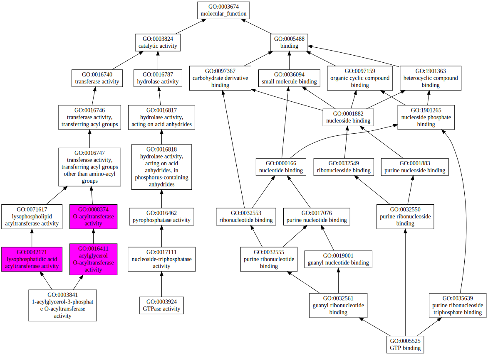
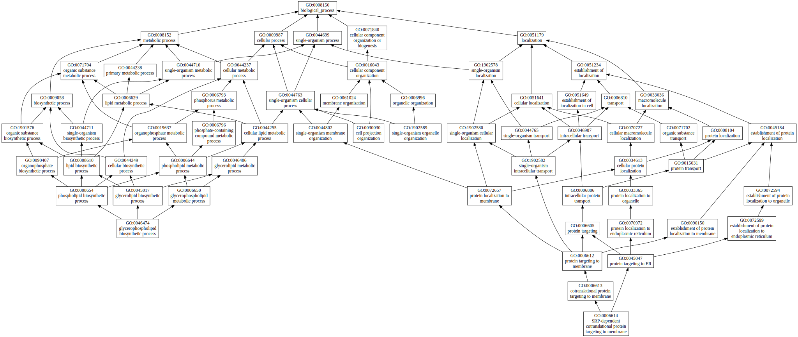
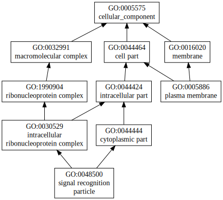

|

|
| GO term | CscoreGO | Name |
| GO:0008374 | 0.29 | O-acyltransferase activity |
| GO:0071617 | 0.28 | lysophospholipid acyltransferase activity |
| GO:0042171 | 0.27 | lysophosphatidic acid acyltransferase activity |
| GO:0016411 | 0.27 | acylglycerol O-acyltransferase activity |
| GO:0005525 | 0.04 | GTP binding |
| GO:0003924 | 0.03 | GTPase activity |
| GO:0003841 | 0.02 | 1-acylglycerol-3-phosphate O-acyltransferase activity |
| Download full result of the above consensus prediction. |
| Click the graph to show a high resolution version. |
| (a) | CscoreGO is the confidence score of predicted GO terms. CscoreGO values range in between [0-1]; where a higher value indicates a better confidence in predicting the function using the template. |
| (b) | The graph shows the predicted terms within the Gene Ontology hierachy for Molecular Function. Confidently predicted terms are color coded by CscoreGO: |
| | [0.13,0.5) | [0.5,0.6) | [0.6,0.7) | [0.7,0.8) | [0.8,0.9) | [0.9,1.0] |
|
|
|

|
| GO term | CscoreGO | Name |
| GO:0044763 | 0.24 | single-organism cellular process |
| GO:0008610 | 0.05 | lipid biosynthetic process |
| GO:0006644 | 0.05 | phospholipid metabolic process |
| GO:0045017 | 0.04 | glycerolipid biosynthetic process |
| GO:0008654 | 0.04 | phospholipid biosynthetic process |
| GO:0006650 | 0.04 | glycerophospholipid metabolic process |
| GO:1902589 | 0.03 | single-organism organelle organization |
| GO:0046474 | 0.03 | glycerophospholipid biosynthetic process |
| GO:0030030 | 0.03 | cell projection organization |
| GO:0006614 | 0.03 | SRP-dependent cotranslational protein targeting to membrane |
| Download full result of the above consensus prediction. |
| Click the graph to show a high resolution version. |
| (a) | CscoreGO is the confidence score of predicted GO terms. CscoreGO values range in between [0-1]; where a higher value indicates a better confidence in predicting the function using the template. |
| (b) | The graph shows the predicted terms within the Gene Ontology hierachy for Biological Process. Confidently predicted terms are color coded by CscoreGO: |
| | [0.08,0.5) | [0.5,0.6) | [0.6,0.7) | [0.7,0.8) | [0.8,0.9) | [0.9,1.0] |
|
|
|

|
| Download full result of the above consensus prediction. |
| Click the graph to show a high resolution version. |
| (a) | CscoreGO is the confidence score of predicted GO terms. CscoreGO values range in between [0-1]; where a higher value indicates a better confidence in predicting the function using the template. |
| (b) | The graph shows the predicted terms within the Gene Ontology hierachy for Cellular Component. Confidently predicted terms are color coded by CscoreGO: |
| | [0.14,0.5) | [0.5,0.6) | [0.6,0.7) | [0.7,0.8) | [0.8,0.9) | [0.9,1.0] |
|
|
|